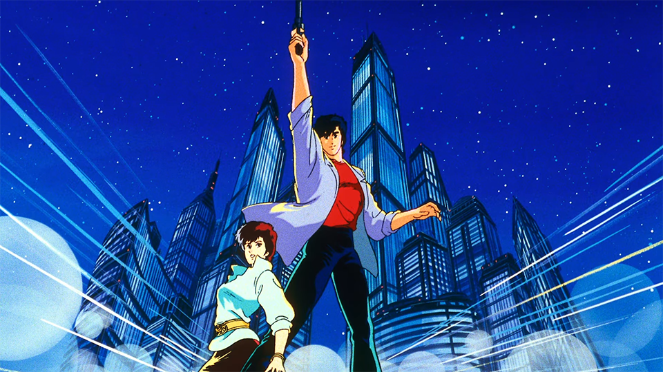
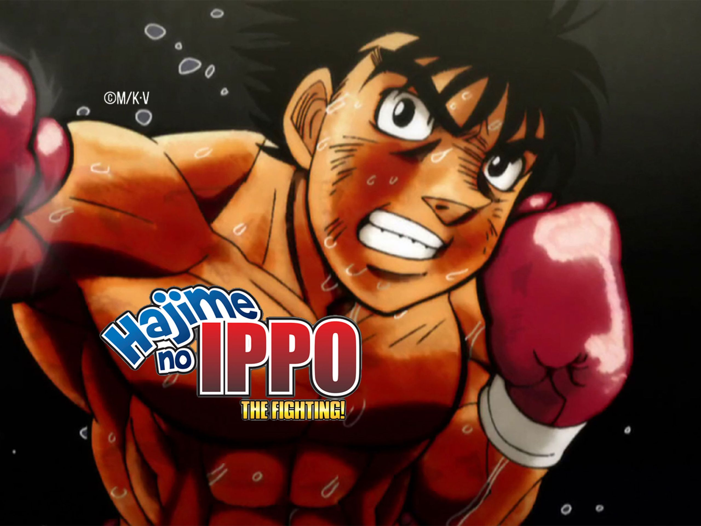
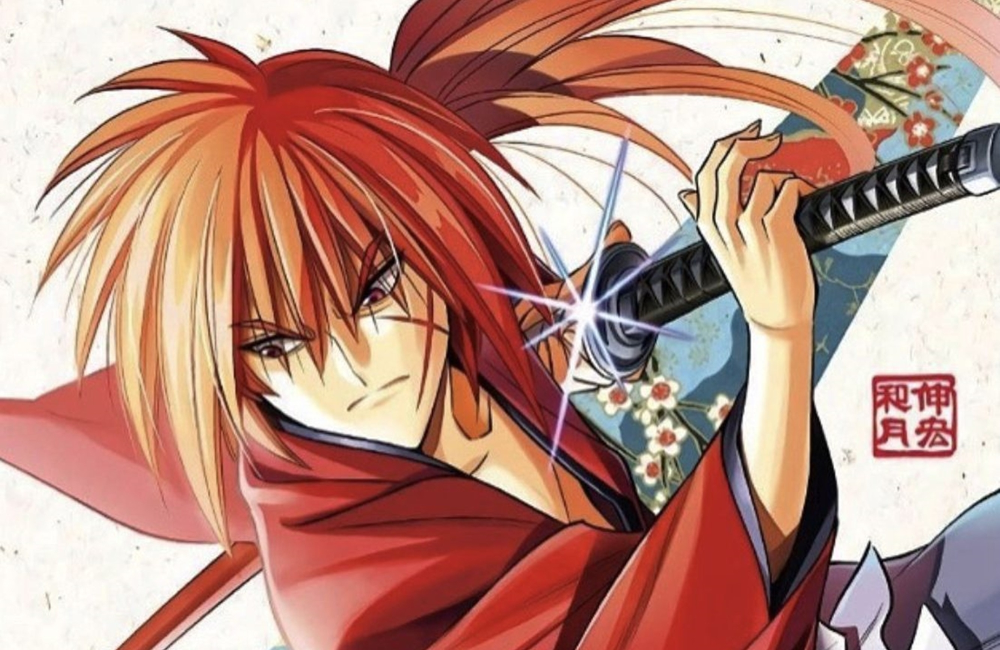
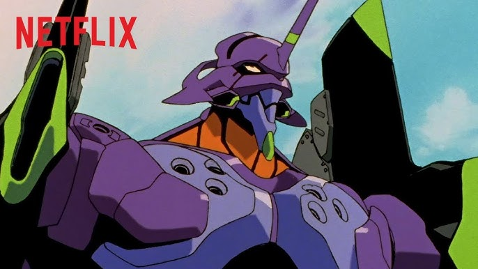

Great Teacher Onizuka
Ancien loubard devenu prof, Onizuka règle les problèmes d'une classe infernale avec du cœur, du chaos et des leçons de vie mémorables.
Une sélection personnelle d'anime cultes : animation, OST, personnages. Découvre les classiques indémodables.
Ancien loubard devenu prof, Onizuka règle les problèmes d'une classe infernale avec du cœur, du chaos et des leçons de vie mémorables.

Space‑western jazzy de Watanabe : chasseurs de primes, mélancolie et style absolu. See you, space cowboy…

Le basket des 90s : rivalités, humour et matchs épiques. Hanamichi passe de voyou à pivot du rêve.

Takumi est un jeune étudiant qui fait des livraisons de tofu nocturnes pour l'entreprise de son père, il va se faire enroler dans le monde des courses nocturnes dans les montagnes de Gunma avec sa légendaire AE86.

Dark fantasy brutale : destin, trahison et épée colossale. Une légende mature.

Ryo Saeba, nettoyeur au grand cœur : punch‑lines, massue de Kaori et affaires explosives.

La montée d'un boxeur timide jusqu'aux rings pro : entraînements durs, combats nerveux et respect.

Reboot élégant du sabreur à la lame inversée : chorés nerveuses et atmosphère Meiji.

Mechas, apocalypse et introspection : un monument qui a redéfini le genre.

Great Teacher Onizuka

Cowboy Bebop

Slam Dunk

Initial D

Berserk

City Hunter

Hajime no Ippo

Kenshin le Vagabond

Evangelion